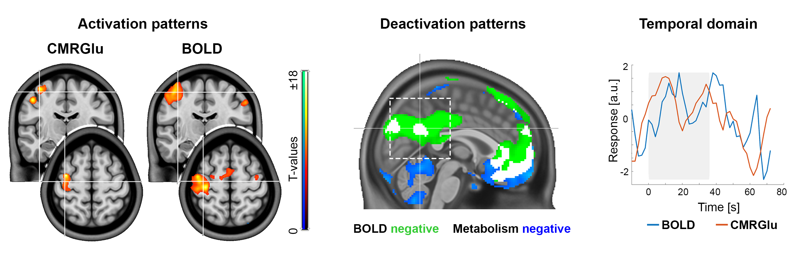
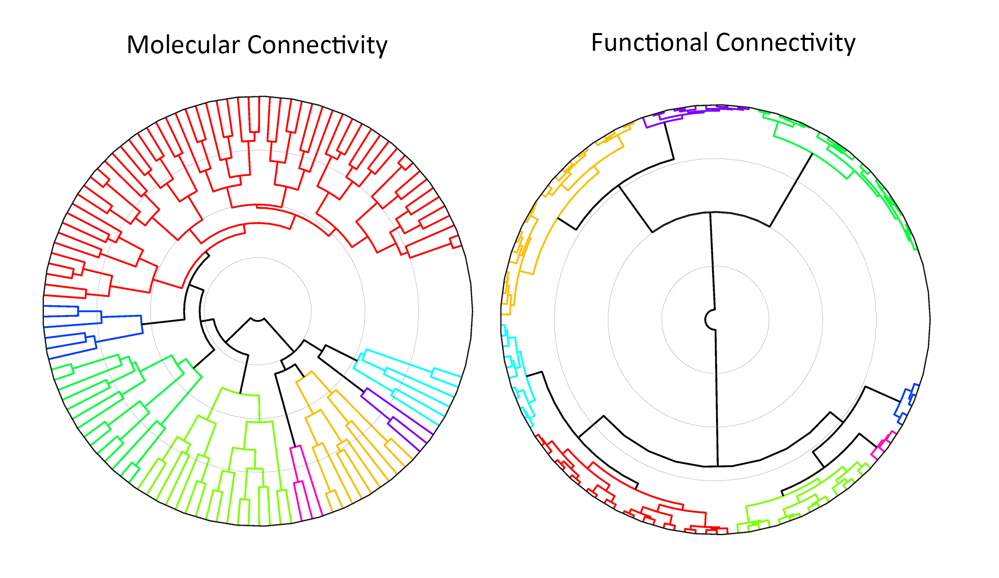

About us
Our goal is to provide the fPET toolbox as a freely available and open resource for the research community, supporting transparent, reproducible, and high-quality functional PET research. By lowering technical barriers, we aim to facilitate broader adoption of fPET methodology and accelerate scientific progress.
We recommend reaching out to us before planning or conducting your fPET experiments. Our team has extensive experience collaborating with international labs and can assist with study design and analysis protocols.
The fPET Toolbox has been developed by the Neuroimaging Labs, Medical Univerisity of Vienna.
For any issues, bug reports, feature requests, or study design consultations, please contact the developers:
Toolbox
Functional positron emission tomography (fPET) enables the identification of stimulation-induced changes in glucose metabolism, neurotransmitter dynamics, and molecular connectivity in the living brain. By leveraging the temporal dimension of PET data, fPET provides access to dynamic metabolic and molecular processes that are not captured by conventional static imaging approaches.
The fPET toolbox offers a comprehensive suite of analysis methods tailored to these data, including voxelwise and region-based modeling using the General Linear Model (GLM), data-driven decomposition through Independent Component Analysis (ICA), and network-level analyses based on molecular connectivity and molecular covariance estimation. Together, these approaches support both hypothesis-driven and exploratory investigations of molecular brain function and organization.
The toolbox is optimized for fPET acquisitions using a bolus plus constant infusion protocol and supports high temporal resolutions ranging from 1 to 60 seconds. While primarily designed for this acquisition scheme, the framework is flexible and may be adapted to alternative protocols and experimental designs, enabling robust and reproducible analysis across a wide range of fPET studies.
Functionality
 Schematic overview of fPET toolbox functionalities. The input is defined by a script or the GUI and contains all relevant parameters such as the desired calculation, input data, masks, atlases, etc. The toolbox is started by calling a single master function, all other computations are carried out internally, without any further user input. After evaluating the correctness and completeness of the input, the selected calculations are done (GLM, ICA, molecular connectivity or covariance).
Schematic overview of fPET toolbox functionalities. The input is defined by a script or the GUI and contains all relevant parameters such as the desired calculation, input data, masks, atlases, etc. The toolbox is started by calling a single master function, all other computations are carried out internally, without any further user input. After evaluating the correctness and completeness of the input, the selected calculations are done (GLM, ICA, molecular connectivity or covariance).
[Image from Hahn et al., JCBFM (2025)]
Applications
 Direct comparison between [¹⁸F]FDG fPET and BOLD fMRI shows strong spatial overlap of task-specific neuronal activation (left). Deactivations of both imaging modalities depend on the cognitive task and the correspondingly activated network (middle). The temporal domain reveals high agreement between brain signals at the individual subject level (right).
[Images from Rischka et al., NeuroImage 181: 323 (2018); Godbersen et al., eLife 12:e84683 (2023); Hahn et al., EJNMMI 51: 1310 (2024)]
 Comparision of molecular and functional connectivity network clusters: While both modalities show clear modular organization, metabolic connectivity clusters are positioned more closely together, suggesting higher inter-network similarity compared to the more differentiated structure observed in functional connectivity.[Image from Reed et al., JCBFM (Under Revision)]